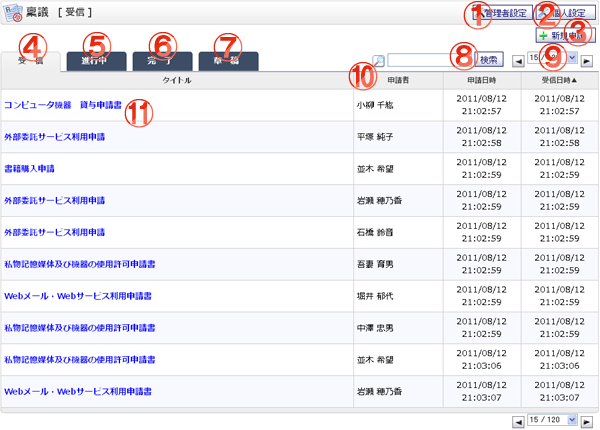

受信した稟議の一覧を確認する画面です。

機能説明
管理者設定ボタン管理者設定メニュー画面へ遷移します。 |
個人設定ボタン個人設定メニュー画面へ遷移します。 |
|---|---|
新規申請ボタン稟議新規作成画面へ遷移します。 |
受信タブ受信した稟議の一覧を表示します。 |
進行中タブ進行中の稟議の一覧を表示します。 |
完了タブ完了した稟議の一覧を表示します。 |
草稿タブ作成した稟議草稿の一覧を表示します。 |
検索ボタン入力されたキーワードを元に詳細検索画面へ遷移します。 |
ページコンボ・前頁・次頁ページコンボで任意のページへ、前頁アイコンクリックで前のページへ、次頁アイコンクリックで次のページへそれぞれ遷移します。 |
ヘッダタイトルクリックによって一覧のソート条件の切り替えを行います。現在ソート条件になっている項目をもう１度クリックすると「昇順」「降順」が切り替わります。 |
受信稟議内容受信稟議のタイトル、申請者、申請日時、受信日時を表示します。タイトルをクリックすると稟議内容確認画面へ遷移します。 |
表示・入力項目説明
検索キーワード
検索するキーワードを入力します。